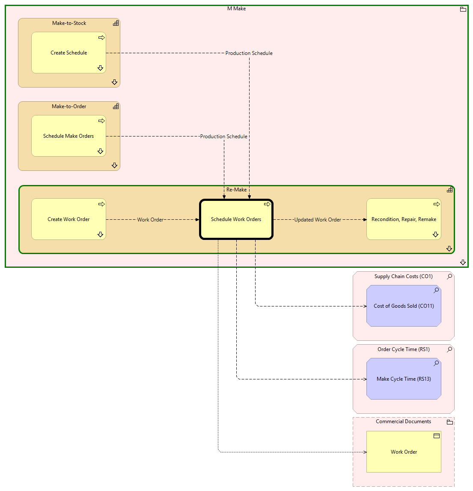

Schedule Work Orders - Context
(
)

generated_by
build_archi_xml.py::gen_proc_node_context_view
generator_path
pedro/capabilities/build_archi_xml_assign/build_archi_xml_assign.py
run_at
2026-10-10T17:59:36
view_type
process_context
M Make
Re-Make
Recondition, Repair, Remake
Recondition, Repair, Remake - Context
Schedule Work Orders
Create Work Order
Create Work Order - Context
Re-Make - Processes
Make-to-Order
Schedule Make Orders
Schedule Make Orders - Context
Make-to-Order - Processes
Make-to-Stock
Create Schedule
Create Schedule - Context
Make-to-Stock - Processes
M Make - Processes
Supply Chain Costs (CO1)
Cost of Goods Sold (CO11)
Order Cycle Time (RS1)
Make Cycle Time (RS13)
Commercial Documents
Work Order
Updated Work Order
Schedule Work Orders
Recondition, Repair, Remake
Schedule Work Orders
Cost of Goods Sold (CO11)
Schedule Work Orders
Make Cycle Time (RS13)
Schedule Work Orders
Work Order
Work Order
Create Work Order
Schedule Work Orders
Production Schedule
Schedule Make Orders
Schedule Work Orders
Production Schedule
Create Schedule
Schedule Work Orders